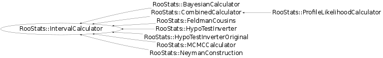

class RooStats::IntervalCalculator
IntervalCalculator is an interface class for a tools which produce RooStats ConfIntervals. The interface currently assumes that any interval calculator can be configured by specifying:
- a model,
- a data set,
- a set of parameters of interest,
- a set of nuisance parameters (eg. parameters on which the model depends, but are not of interest), and
- a confidence level or size of the test (eg. rate of Type I error).
After configuring the calculator, one only needs to ask GetInterval, which will return a ConfInterval pointer.
The concrete implementations of this interface should deal with the details of how the nuisance parameters are dealt with (eg. integration vs. profiling) and which test-statistic is used (perhaps this should be added to the interface).
The motivation for this interface is that we hope to be able to specify the problem in a common way for several concrete calculators.
Function Members (Methods)
This is an abstract class, constructors will not be documented.
Look at the header to check for available constructors.
public:
| virtual | ~IntervalCalculator() |
| static TClass* | Class() |
| virtual Double_t | ConfidenceLevel() const |
| virtual RooStats::ConfInterval* | GetInterval() const |
| virtual TClass* | IsA() const |
| RooStats::IntervalCalculator& | operator=(const RooStats::IntervalCalculator&) |
| virtual void | SetConfidenceLevel(Double_t cl) |
| virtual void | SetData(RooAbsData&) |
| virtual void | SetModel(const RooStats::ModelConfig&) |
| virtual void | SetTestSize(Double_t size) |
| virtual void | ShowMembers(TMemberInspector& insp) |
| virtual Double_t | Size() const |
| virtual void | Streamer(TBuffer& b) |
| void | StreamerNVirtual(TBuffer& b) |
Class Charts
{kind=link}
{kind=link}
{kind=link}
{kind=link}

Function documentation
void SetTestSize(Double_t size)
set the size of the test (rate of Type I error) ( e.g. 0.05 for a 95% Confidence Interval)
void SetConfidenceLevel(Double_t cl)
set the confidence level for the interval (e.g. 0.95 for a 95% Confidence Interval)